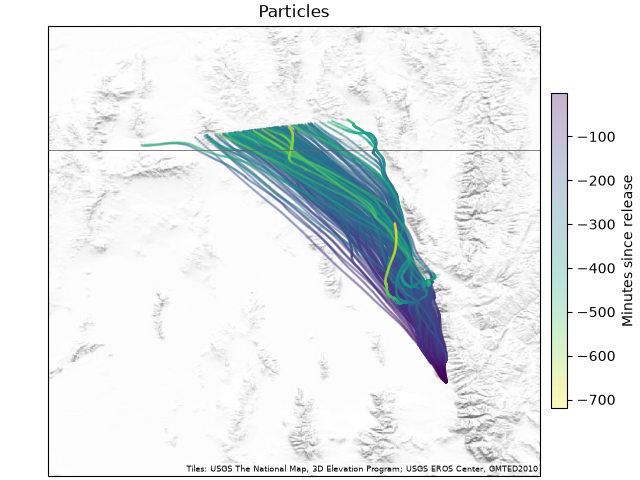

Your First Run#
This page runs HYSPLIT for one release and looks at its particles, then runs the same release as a project, which is how many releases are run. Install runtraj and get HYSPLIT first (Installation).
Before you start#
A transport model moves particles with wind fields from a weather model, which HYSPLIT reads as ARL-format files. You need files covering the release time and every hour of the run: for a 24-hour backward run, from 24 hours before the release to just after it. A simulation with a file missing fails, naming the hours.
If you already have ARL files, for example in a group archive, tell runtraj the folder they are in. Each file’s header says which times it holds, so their names do not matter:
met = "/path/to/arl/hrrr"
If you don’t have ARL files, runtraj can download them from NOAA’s archive
into a folder you choose. This needs the download extra.
met = {
"download": "hrrr", # which NOAA ARL archive
"directory": "/path/to/download/folder",
"subgrid_enable": True, # keep only your region
"subgrid_bounds": {"xmin": -114, "xmax": -110, "ymin": 39, "ymax": 42},
}
Warning
NOAA’s files cover whole continents, so the first download for a given period is several gigabytes even though only your region is kept. Downloaded files are reused on later runs. See Meteorology for the available products.
Step 1: Describe a release#
A release is where and when the particles start. This one is 10 m above the ground on the University of Utah campus, at noon local time (19:00 UTC) on 14 January 2021:
In [1]: import runtraj
In [2]: release = runtraj.PointRelease(
...: time="2021-01-14 19:00", # UTC
...: longitude=-111.848,
...: latitude=40.766,
...: altitude=10, # meters above ground level
...: )
...:
Step 2: Follow the particles#
runtraj.run_trajectories() releases particles at the release and
follows them through the meteorology:
In [3]: particles = runtraj.run_trajectories(
...: release,
...: met,
...: n_hours=-12, # follow the air 12 hours back in time
...: numpar=200, # number of particles to release
...: krand=2, # the random numbers a seed can fix
...: seed=42, # same seed, same particles
...: )
...:
n_hoursHow long to follow the particles. Negative means backward in time, from a measurement toward the sources that influenced it. Positive means forward, from a source toward where the air goes. This page uses 12 hours because its met files start 13 hours before the release.
numparHow many particles to release. More particles sample the turbulence better but take longer. 200 is enough to see where the air went.
krandandseedHYSPLIT draws random numbers for the turbulence that moves each particle.
krand=2with aseedmakes the draws the same on every run, so your particles match the ones on this page.
Every other HYSPLIT setting takes HYSPLIT’s own default. runtraj For HYSPLIT Users lists the settings and where each goes in HYSPLIT’s input files.
This runs HYSPLIT, the transport model, and usually takes a minute or two.
The particles are a pandas.DataFrame, one row per particle per
time step:
In [4]: particles.head()
Out[4]:
age particle lon ... mlht pres time
0 -1.0 1.0 -111.8497 ... 1029.05 853.30 2021-01-14 18:59:00
1 -1.0 2.0 -111.8501 ... 1029.05 856.30 2021-01-14 18:59:00
2 -1.0 3.0 -111.8496 ... 1029.05 855.58 2021-01-14 18:59:00
3 -1.0 4.0 -111.8494 ... 1029.05 856.30 2021-01-14 18:59:00
4 -1.0 5.0 -111.8489 ... 1029.05 856.17 2021-01-14 18:59:00
[5 rows x 21 columns]
In [5]: particles.runtraj.plot.map();


The particles start at the release and spread out. The met files here cover
only a small region around Salt Lake, and a particle that leaves the met stops
there. This is how many hours they went (age is in minutes):
In [6]: print(f"{particles['age'].abs().max() / 60:.1f} hours")
12.0 hours
Step 3: Run it as a project#
One call is enough for one release. For many releases, make a
Project: a folder that holds your releases and settings,
runs every release, and keeps the results. Project.init creates the folder and writes both to it. The
settings are the ones above, in the block of the transport model they
belong to:
In [7]: project = runtraj.Project.init(
...: "./my_first_project",
...: releases=[release],
...: mets={"hrrr": met}, # "hrrr" is a name you choose
...: models={
...: "hysplit": {"n_hours": -12, "numpar": 200, "krand": 2, "seed": 42}
...: },
...: variants={"hrrr": {}}, # one variant: these settings, met hrrr
...: )
...:
Before running, check the project. project.check() looks for what would
stop a run before it starts: met files missing for a release’s hours, and a
met folder that does not exist. It returns a table with a row for each thing
found, so an empty table means nothing is in the way:
In [8]: project.check()
Out[8]:
Empty DataFrame
Columns: [check, variant, release, message]
Index: []
The check reads only the headers of the met files, so a run that passes it can still fail later, if a met file is damaged in the middle (Checking A Run).
In [9]: project.run();
run() runs every release, and returns when they are done.
runtraj runs each release once per variant, a named set of settings. With
the settings above there is one variant, named hrrr after the met. One
release under one variant is a simulation. Look yours up by the release’s id
and the variant name:
In [10]: sim = project.simulation(release.id, "hrrr")
In [11]: sim.particles.head()
Out[11]:
age particle lon ... mlht pres time
0 -1.0 1.0 -111.8497 ... 1029.05 853.30 2021-01-14 18:59:00
1 -1.0 2.0 -111.8501 ... 1029.05 856.30 2021-01-14 18:59:00
2 -1.0 3.0 -111.8496 ... 1029.05 855.58 2021-01-14 18:59:00
3 -1.0 4.0 -111.8494 ... 1029.05 856.30 2021-01-14 18:59:00
4 -1.0 5.0 -111.8489 ... 1029.05 856.17 2021-01-14 18:59:00
[5 rows x 21 columns]
What runtraj wrote#
Your inputs are in the project folder, and the results in its output
folder:
my_first_project/
config.yaml # your settings
releases.csv # your releases
output/
particles/ # where each particle went, one file per simulation
logs/ # HYSPLIT's log of each run
Each result is kept under the settings it was made with. Change a setting and the next run writes new files beside the old ones, so nothing is overwritten. Output Layout has the full layout.
Your settings and releases are saved in the folder, so you can open the project again later without repeating them:
project = runtraj.Project("./my_first_project")
Project.init runs once per project. It stops with a
FileExistsError if the folder already has a config.yaml. To change a
setting later, edit config.yaml.
If you call project.run() again, nothing happens. runtraj sees that the
outputs already exist and skips them. If you add releases with
project.add_releases(...), only the new ones run.
The same run from the command line#
A project is two files you can write by hand. my_first_project/config.yaml
has the same blocks as the Python example above:
mets:
hrrr: /path/to/arl/hrrr
models:
hysplit:
n_hours: -12
numpar: 200
krand: 2
seed: 42
variants:
hrrr: {}
my_first_project/releases.csv has one release per line, below a header
line:
time,longitude,latitude,altitude
2021-01-14 19:00:00,-111.848,40.766,10
Then check the project, run it, and look at the result:
runtraj check ./my_first_project
runtraj run ./my_first_project
runtraj status ./my_first_project
runtraj check lists what would stop a run, such as a met file that is not
there, and exits with 1 when it lists anything. When everything is in place it
prints No problems found. and exits with 0.
Next steps#
Set up a project of your own, with variants: Projects And Variants
Understand the different release types: Releases
Read and plot the particles of many simulations: Reading And Plotting Particles
Run thousands of simulations on a cluster: On An HPC Cluster (Slurm)